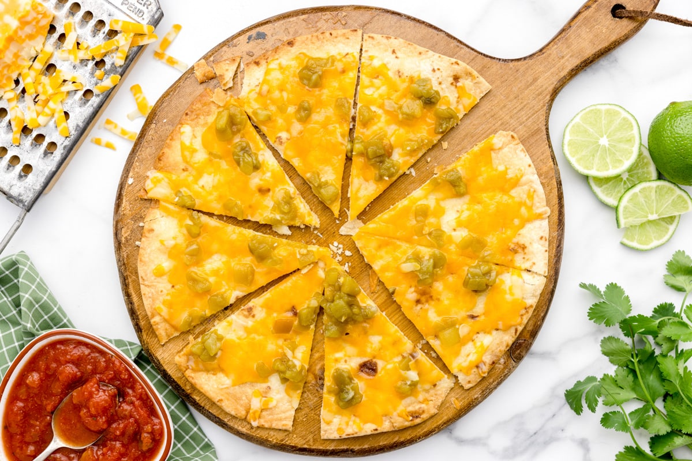

Cheese Crisp

WHAT IS A CHEESE CRISP?
The Arizona cheese crisp, also known as “Sonoran Quesadilla”, is said to have originated in Southern Arizona as a way to use leftover flour tortillas. It is a popular Mexican-style dish all over Arizona and surrounding areas, although it’s not necessarily a traditional dish.
A cheese crisp is basically a flat tortilla covered with piles of cheese. It is then baked in the oven until the cheese has melted and the tortilla has a perfectly crisp texture.
It is similar to a Quesadilla, except that a quesadilla is folded over and pan-fried until toasted and warm throughout.
Ingredients??
- 2 large burrito sized tortillas (at east 13inch diameter)
- 1/4 cup butter
- 1 1/2 cups shredded Colby Jack cheese
- 1/4 cup diced green chiles
Steps??
- PREP. Preheat your oven to 350°F with a rack in the middle.
- TORTILLA. Butter the tortilla making sure to cover the entire surface and place a large, foil-lined baking sheet. Bake for about 5-10 minutes or until the tortilla is toasted.
- CHEESE. Remove the tortilla from the oven and sprinkle with ¾ cup cheese and diced green chiles. Return to oven and bake for an additional 2-3 minutes or until the cheese has melted.
- SERVE! Take out, cut up, and enjoy warm. Repeat with additional cheese crisps.
Source!